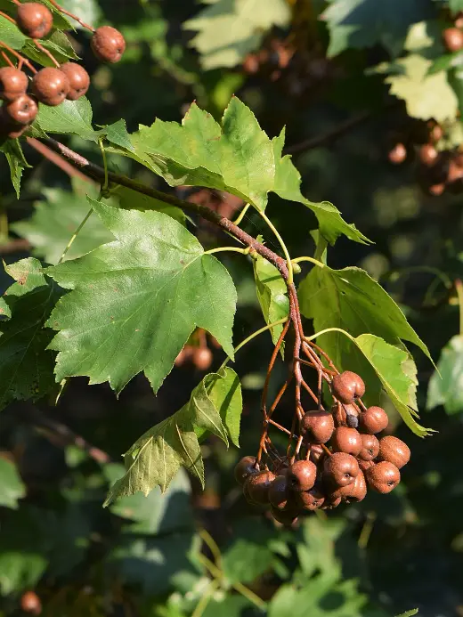

Wild service tree
Wild service tree is a wild fruit you can forage from September to October in South and the Alps, West and East. Woodland tree with maple-like, sharply lobed leaves and clusters of small brown, speckled berries ('chequers').

When is wild service tree in season in Germany?
Wild service tree is usually in season September to October. Timing shifts with weather, latitude and altitude.
Where does wild service tree grow in Germany?
Wild service tree grows in Baden-Württemberg, Bavaria, Berlin, Brandenburg, Hesse, Mecklenburg-Vorpommern, North Rhine-Westphalia, Rhineland-Palatinate, Saarland, Saxony, Saxony-Anhalt, Thuringia. Regions: South and the Alps, West, East.
How do you recognise wild service tree?
Woodland tree with maple-like, sharply lobed leaves and clusters of small brown, speckled berries ('chequers').
How do you harvest wild service tree?
Pick only fully ripe fruit that comes away easily, into a shallow container so it doesn't crush. Leave plenty on the plant for birds and wildlife.
How do you eat wild service tree?
Bletted berries taste of dates and tamarind; eaten fresh or in jelly.
How do you store wild service tree?
Jelly.
What is wild service tree good for?
Calories.